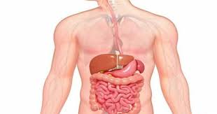

पाचन

पाचन जन्तुओं के पोषण की पाँच अवस्थाओं में से एक हैं। भोजन के अघुलनशील एवं जटिल पदार्थों (कार्बोहाइड्रेट, प्रोटीन, वसा) को एन्जाइम्स के द्वारा घुलनशील एवं सरल अवयवों में परिवर्तित करने की प्रक्रिया पाचन कहलाती है। इस क्रिया में टायलिन, पेप्सिन, ट्रिप्सिन, एमाइलेज, लाइपेज, इरेप्सिन आदि एन्जाइम्स भाग लेकर भोजन के मण्ड, प्रोटीन तथा वसीय अम्ल जैसे अधुलनशील पदार्थों को क्रमशः ग्लूकोज़, अमीनों अम्ल, वसीय अम्ल जैसे घुलनशील पदार्थों में बदल देते हैं। अमीबा में पाचन क्रिया खाद्य रिक्तिका में होती है। जिसे अन्तःकोशिकीय पाचन कहते हैं। मेंढक, पक्षी, पशु एवं मनुष्य में पाचन क्रिया आहारनाल के अन्दर होती है, जिसे बाह्यकोशिकीय पाचन कहते हैं।